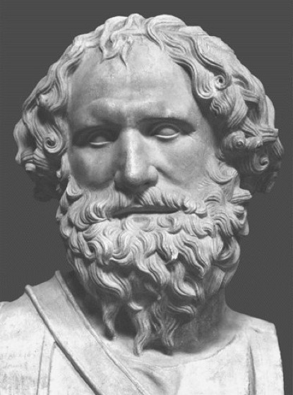

Physik
Allgemeines
Physik -> Wort der altgriechischen Sprache -> Natur
Physiker... Naturwissenschaftler
Warum beschäftigen sich die Menschen im Griechenland (500 v.Chr. - 0 v.Chr.) mit der Natur
- Wie funktioniert die Erdanziehung?
- Wie funktioniert der Schiffbau? -> Archemedes
- Um Naturkatastrophen im Griff zu bekommen.
- Um Maschinen (und Acuh Waffen) zu konstruieren.
- Um herauszufinden ob die Erde falch oder eine Kugel ist.
- Orientierung mittels Sternenkunde (Astronomie).
- Untersuchen den Aufbau von Materien. -> Demokit
Archimedes

Wichtige griechische Physiker in dieser Zeit
|
V
Plato, Aristotle (Physik Lexikon), ...
|
V
Die Gesetze, die wichtig für die Natur sind, wollten die Griechen verstehen! Neugier,...
Plato
 Aristole
Aristole